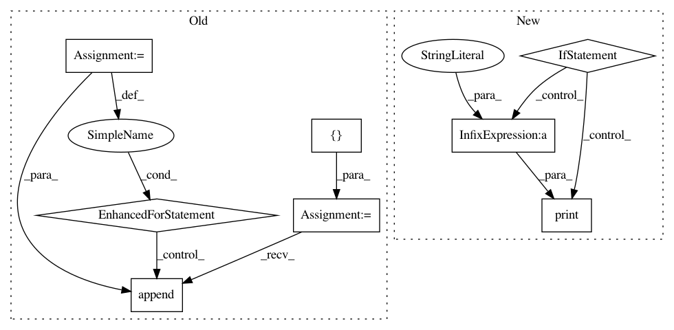

2402c8a3c28f5c6faf9931fe97b6516b7c426edb,smac/smbo/intensification.py,Intensifier,intensify,#Intensifier#,87
Before Change
challenger_runs = self.run_history.get_runs_for_config(
challenger)
chal_inst_seeds = map(lambda x: (
x.instance, x.seed), self.run_history.get_runs_for_config(challenger))
chal_perf = sum(map(lambda x: x.cost, challenger_runs))
inc_id = self.run_history.config_ids[self.incumbent.__repr__()]
inc_perfs = []
for i, r in chal_inst_seeds:
inc_k = self.run_history.RunKey(inc_id, i, r)
inc_perfs.append(self.run_history.data[inc_k].cost)
inc_perf = sum(inc_perfs)
if chal_perf > inc_perf:
// Incumbent beats challenger
After Change
for instance, seed in to_run:
// Run challenger on all <config,seed> to run
if self.run_obj_time:
cutoff = min(self.cutoff, (inc_perf - chal_time) * self.Adaptive_Capping_Slackfactor)
print("Adaptive Capping cutoff: %f" %(cutoff))
else:
cutoff = self.cutoff
status, cost, dur, res = self.tae.run(config=challenger,
instance=instance,
seed=seed,
cutoff=cutoff)
In pattern: SUPERPATTERN
Frequency: 3
Non-data size: 8
Instances
Project Name: automl/SMAC3
Commit Name: 2402c8a3c28f5c6faf9931fe97b6516b7c426edb
Time: 2016-02-12
Author: lindauer@cs.uni-freiburg.de
File Name: smac/smbo/intensification.py
Class Name: Intensifier
Method Name: intensify
Project Name: daniel-kukiela/nmt-chatbot
Commit Name: 0e2a7f6d85a341959eba41d65019b2566084b406
Time: 2017-12-03
Author: daniel@kukiela.pl
File Name: inference.py
Class Name:
Method Name:
Project Name: prody/ProDy
Commit Name: 83f408211f676828496d84a5dc8df46b24065fb8
Time: 2018-03-01
Author: hongchun@pitt.edu
File Name: prody/ensemble/dali.py
Class Name: daliRecord
Method Name: buildDaliEnsemble